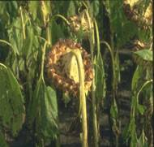

| Home |
| SUNFLOWER |
MAJOR DISEASES |
| 1. Root rot or charcoal rot |
| 2. Leaf blight |
| 3. Rust |
| 4. Head rot |
| 5. Powdery mildew |
| 6. Basal rot |
| 7. Necrosis |
| Questions |
| Download Notes |
SUNFLOWER :: MAJOR DISEASE :: LEAF BLIGHT
Leaf blight - Alternaria helianthi
Symptoms
The pathogen produces brown spots on the leaves, but the spots can also be seen on the stem, sepals and petals. The lesions on the leaves are dark brown with pale margin surrounded by a yellow halo. The spots later enlarge in size with concentric rings and become irregular in shape. Several spots coalesce to show bigger irregular lesions leading to drying and defoliation.
|  | |
Symptoms |
|
Pathogen
The pathogen produces cylindrical conidiophores, which are pale grey-yellow coloured, straight or curved, geniculate, simple or branched, septate and bear single conidium. Conidia are cylindrical to long ellipsoid, straight or slightly curved, pale grey-yellow to pale brown, 1 to 2 septate with longitudinal septa.
Favourable Conditions
- Rainy weather.
- Cool winter climate.
- Late sown crops are highly susceptible.
Disease cycle
The fungus survives in the infected host tissues and weed hosts. The fungus is also seed-borne. The secondary spread is mainly through wind blown conidia.
Management
- Deep summer ploughing.
- Proper spacing
- Clean cultivation and field sanitation.
- Use of resistant or tolerant variety like B.S.H.1 .
- Application of well rotten manures.
- Practicing crop rotation.
- Planting in mid-September.
- Remove and destroy the diseased plants
- Treat the seeds with Thiram or Carbendazim at 2 g/kg. Spray Mancozeb at
2 kg/ha.